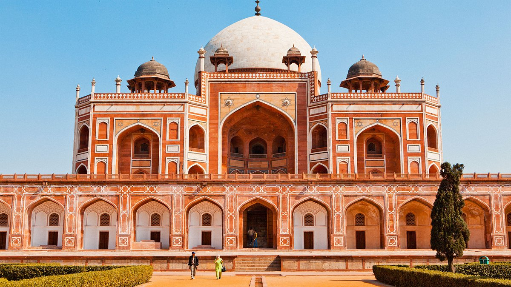

Best Things To Do In Delhi, India (With Insider Tips!)
Last updated: January 25, 2025
Delhi, the heart of India, is a city that beautifully blends history, culture, and modernity. As the capital of India, it is home to a treasure trove of architectural marvels, bustling markets, and mouthwatering cuisine. Whether you are a history enthusiast, a foodie, or just someone looking to soak in the vibrant culture, Delhi has something for everyone. With landmarks that date back centuries and a cosmopolitan buzz that ensures every moment feels like a new discovery, the city offers an intriguing mix of old-world charm and contemporary elegance. Take a walk through its alleys, discover local art and cuisine, and experience the hustle and bustle of its crowded streets, each corner of Delhi tells a unique story that reflects its rich and diverse history. Let’s explore some of the top attractions that make Delhi an unforgettable destination!
Top 5 Places To Visit In Delhi In 2025:
1. The Red Fort
The Red Fort, a UNESCO World Heritage Site, stands as a symbol of India’s rich history and independence. Built by Mughal Emperor Shah Jahan in 1648, its red sandstone walls house stunning palaces, gardens, and museums. The fort served as the seat of the Mughal emperors for around 200 years, and its grand design is an iconic example of Mughal architecture. With high ceilings, intricate carvings, and sweeping courtyards, the fort invites visitors to delve deep into India’s glorious past. Don’t miss the evening light and sound show that narrates the history of the fort, offering visitors a closer look at the events that shaped India’s political landscape.
Tickets cost INR 50 for Indian nationals and INR 600 for foreign tourists. The fort is open from 9:30 AM to 4:30 PM every day except Monday. Visitors should plan their trip with a guided tour to fully experience its history.
2. Lotus Temple
The Lotus Temple is a breathtaking Baháʼí House of Worship known for its unique lotus-like design. This architectural wonder is a haven of peace and serenity where people from all religions can meditate and reflect. It stands as a symbol of unity, acceptance, and peace, offering a quiet respite amidst the chaotic rush of the city. The structure itself, made of pristine white marble, is an impressive sight, especially during the evening when the glowing lights accentuate its beauty. Surrounded by lush green gardens, the temple offers a calming environment, perfect for introspection and relaxation. The calm aura of the temple is amplified by the silence that visitors maintain within its premises.
Entry is free, and the temple is open from 9:00 AM to 5:30 PM. The best time to visit is during the evening to see the temple beautifully illuminated under the setting sun.
3. Qutub Minar
Qutub Minar is one of Delhi’s most iconic landmarks and the world’s tallest brick minaret. This magnificent structure, built in 1193 by Qutab-ud-din Aibak, is surrounded by several other historical monuments, including the Quwwat-ul-Islam mosque. The 73-meter-tall tower stands as a testament to India’s rich history, and visitors can admire its intricate inscriptions and stunning carvings as they ascend the spiral staircase (currently closed to the public). The nearby ruins of the first mosque in India add an element of ancient mystique to the visit. This UNESCO World Heritage Site highlights the Islamic architectural influence in the Indian subcontinent and represents the enduring legacy of India's diverse cultural heritage.
Entry fees are INR 30 for Indian nationals and INR 500 for foreign visitors. The site is open daily from sunrise to sunset. It’s an excellent place for history buffs and photography enthusiasts alike.

4. India Gate
India Gate is a grand war memorial dedicated to Indian soldiers who died during World War I. Located in the heart of the city, it is surrounded by lush gardens and offers a peaceful ambiance. The structure is an epitome of the country's national pride, and at night, it is illuminated beautifully, highlighting the architectural details. The area around India Gate, often referred to as "the ceremonial center," is home to large avenues, historical structures, and a serene setting for evening walks. The India Gate is often considered a symbol of resilience and sacrifice. It remains a strong and revered memorial, visited by millions each year who come to pay homage to India’s martyrs. The iconic monument represents not only India's history but also its bright future, continuing to attract people from across the world.
Visiting India Gate is free, and it is accessible 24/7. Early mornings or late evenings are the best times to experience its beauty.

5. Chandni Chowk
Chandni Chowk is one of Delhi’s oldest and busiest markets, famous for its chaotic charm, vibrant shops, and delicious street food. The market, which dates back to the Mughal era, offers a glimpse into traditional Indian commerce, with narrow lanes filled with bustling merchants selling everything from clothes to electronics. Visitors can spend hours lost in the overwhelming sea of sounds, colors, and smells while sampling culinary delights like paranthas, jalebis, and kebabs from local eateries. Its lively atmosphere makes it an immersive cultural experience for anyone eager to explore Delhi's authentic food scene and markets. It is a hub for those seeking local crafts and souvenirs as well.
Entry to Chandni Chowk is free. The market is open every day except Sundays. Best visited during the morning or late evening to avoid crowds.

Local Tips:
Indulge in authentic North Indian cuisine at Karim’s near Jama Masjid, a legendary eatery loved by locals and tourists alike. The rich flavors, aromatic spices, and traditional Mughlai preparation styles of Karim’s will transport your taste buds to another world. The restaurant's decades-long heritage makes it one of Delhi's finest dining experiences.
Use the Delhi Metro for quick and affordable travel around the city. It’s clean, efficient, and well-connected to major attractions. The Metro is one of the most convenient ways to explore Delhi without getting caught in traffic, especially during peak hours.
Visit markets like Dilli Haat for souvenirs and handicrafts. Bargaining is common, so don’t hesitate to
negotiate for the best price.
The vibrant culture of bargaining adds to the fun and excitement of shopping in Delhi. From handicrafts to
intricate textiles,
every item in Dilli Haat tells a story of India's craftsmanship.